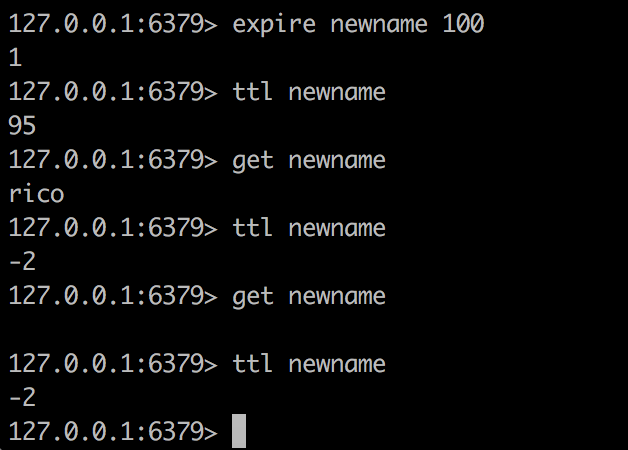

Redis系列之基础
本文为掘金小册学习笔记
Redis是[Remote Dictionary Service]的首字母缩写，也就是「远程字典服务」
启动关闭
1 | ./redis-server --daemonize yes |
或修改配置文件 找到daemonize no这一行，将no改为yes

使用命令ps -ef | grep -i redis 查看redis是否运行及其端口
关闭Redis
第一种方式 kill -9 5318但这种方式不建议使用
第二种方式 ./bin/redis-cli shutdown 推荐使用这种方式
Redis 基础数据结构
Redis 有 5 种基础数据结构，分别为：string (字符串)、list (列表)、set (集合)、hash (哈希) 和 zset (有序集合)
string (字符串)
字符串 string 是 Redis 最简单的数据结构。Redis 所有的数据结构都是以唯一的 key 字符串作为名称，然后通过这个唯一 key 值来获取相应的 value 数据。不同类型的数据结构的差异就在于 value 的结构不一样。

字符串结构使用非常广泛，一个常见的用途就是缓存用户信息。我们将用户信息结构体使用 JSON 序列化成字符串，然后将序列化后的字符串塞进 Redis 来缓存。同样，取用户信息会经过一次反序列化的过程。

Redis 的字符串是动态字符串，是可以修改的字符串，内部结构实现上类似于 Java 的 ArrayList，采用预分配冗余空间的方式来减少内存的频繁分配，如图中所示，内部为当前字符串实际分配的空间 capacity 一般要高于实际字符串长度 len。当字符串长度小于 1M 时，扩容都是加倍现有的空间，如果超过 1M，扩容时一次只会多扩 1M 的空间。需要注意的是字符串最大长度为 512M。
键值对
1 | 127.0.0.1:6379> set name rico |
批量键值对
mget mset应该就是multiget, multiset的缩写吧
1 | > set name1 codehole |
过期和 set 命令扩展
可以对 key 设置过期时间，到点自动删除，这个功能常用来控制缓存的失效时间。不过这个「自动删除」的机制是比较复杂的,后面会介绍
1 | > set name codehole |
setex等价于set+expire
计数
如果 value 值是一个整数，还可以对它进行自增操作。自增是有范围的，它的范围是 signed long 的最大最小值，超过了这个值，Redis 会报错。
1 | > set age 30 |
获取一个不存在的返回nil
incr表示增加1 如果这个key不存在，这默认设为0并加1 即为1
如果不是int型 会报错 ERR value is not an integer or out of range
decr 会递减1 如果不存在则是0-1即为-1
incrby 可以指定加多少而不是1 同样如果不存在则为0然后加
decrby 可以指定减少多少
append表示在后面追加 返回值时长度，并不是值
字符串是由多个字节组成，每个字节又是由 8 个 bit 组成，如此便可以将一个字符串看成很多 bit 的组合，这便是 bitmap「位图」数据结构
list (列表)
Redis 的列表相当于 Java 语言里面的 LinkedList，注意它是链表而不是数组。这意味着 list 的插入和删除操作非常快，时间复杂度为 O(1)，但是索引定位很慢，时间复杂度为 O(n)，这点让人非常意外。
在Redis中，list是按照插入顺序排序的 ，可以在头部和尾部添加元素，
在链表的两边插入数据效率较高，在链表的中间插入数据，效率较低
当列表弹出了最后一个元素之后，该数据结构自动被删除，内存被回收。
Redis 的列表结构常用来做异步队列使用。将需要延后处理的任务结构体序列化成字符串塞进 Redis 的列表，另一个线程从这个列表中轮询数据进行处理。
rpush表示在右边添加 a b c 顺序进入，a在最左侧 详情可见上面动画

如果名字之前没有则会新建，如果有就会继续增加
lpush 表示在左边添加 a b c，c在最左侧 过程是: a , ba(在a左侧添加b) ,cba(在ba左侧添加c)

lpop 从左侧压出
1 | 127.0.0.1:6379> lrange mylist 0 5 |
rpop 右侧压出
1 | > lrange mylist 0 5 |
llen
llen mylist 获取list长度 , llen 一个没有的 会返回0
lrange
查看 list lrange mylist 0 5 0表示开始 5表示结束 可以是负值，表示倒数第几个
lrange mylist 0 -1 0，-1表示从头到尾
lpushx,rpushx
lpushx mylist z 会在头部插入一个值 但是当mylsit不存在的时候就不会新建然后插入
同理还有rpushx mylist y
lrem
移除元素lrem 名字 个数 值 意思是删除多少个值为多少的值 rem是remove的缩写
如果个数大于0 就会从头向尾遍历删除
如果个数小于0 就会从后面向前遍历删除
lset
lset mylist 3 x 设置角标为3的值

linsert
linsert mylist before x a意思是在mylist中，在第一个出现x的地方的前面插入a

把 mylist的尾部压出加入到mylist2的头部
这个功能主要用于消费者备份
右边进左边出：队列
1 | > rpush books python java golang |
右边进右边出：栈
1 | > rpush books python java golang |
慢操作
lindex 相当于 Java 链表的get(int index)方法，它需要对链表进行遍历，性能随着参数index增大而变差。
ltrim 和字面上的含义不太一样，个人觉得它叫 lretain(保留) 更合适一些，因为 ltrim 跟的两个参数start_index和end_index定义了一个区间，在这个区间内的值，ltrim 要保留，区间之外统统砍掉。我们可以通过ltrim来实现一个定长的链表，这一点非常有用。
index 可以为负数，index=-1表示倒数第一个元素，同样index=-2表示倒数第二个元素。
1 | > rpush books python java golang |
快速列表

如果再深入一点，你会发现 Redis 底层存储的还不是一个简单的 linkedlist，而是称之为快速链表 quicklist 的一个结构。
首先在列表元素较少的情况下会使用一块连续的内存存储，这个结构是 ziplist，也即是压缩列表。它将所有的元素紧挨着一起存储，分配的是一块连续的内存。当数据量比较多的时候才会改成 quicklist。因为普通的链表需要的附加指针空间太大，会比较浪费空间，而且会加重内存的碎片化。比如这个列表里存的只是 int 类型的数据，结构上还需要两个额外的指针 prev 和 next 。所以 Redis 将链表和 ziplist 结合起来组成了 quicklist。也就是将多个 ziplist 使用双向指针串起来使用。这样既满足了快速的插入删除性能，又不会出现太大的空间冗余。
hash (字典)
Redis 的字典相当于 Java 语言里面的 HashMap，它是无序字典。内部实现结构上同 Java 的 HashMap 也是一致的，同样的数组 + 链表二维结构。第一维 hash 的数组位置碰撞时，就会将碰撞的元素使用链表串接起来。
不同的是，Redis 的字典的值只能是字符串，另外它们 rehash 的方式不一样，因为 Java 的 HashMap 在字典很大时，rehash 是个耗时的操作，需要一次性全部 rehash。Redis 为了高性能，不能堵塞服务，所以采用了渐进式 rehash 策略。
渐进式 rehash 会在 rehash 的同时，保留新旧两个 hash 结构，查询时会同时查询两个 hash 结构，然后在后续的定时任务中以及 hash 操作指令中，循序渐进地将旧 hash 的内容一点点迁移到新的 hash 结构中。当搬迁完成了，就会使用新的hash结构取而代之。
当 hash 移除了最后一个元素之后，该数据结构自动被删除，内存被回收。

hash 结构也可以用来存储用户信息，不同于字符串一次性需要全部序列化整个对象，hash 可以对用户结构中的每个字段单独存储。这样当我们需要获取用户信息时可以进行部分获取。而以整个字符串的形式去保存用户信息的话就只能一次性全部读取，这样就会比较浪费网络流量。
hash 也有缺点，hash 结构的存储消耗要高于单个字符串，到底该使用 hash 还是字符串，需要根据实际情况再三权衡。
1 | > hset books java "think in java" # 命令行的字符串如果包含空格，要用引号括起来 |
同字符串对象一样，hash 结构中的单个子 key 也可以进行计数，它对应的指令是 hincrby，和 incr 使用基本一样。但是不支持自增1 ,也即hincr是不支持的
1 | # 老钱又老了一岁 |
hexists
hexists 名字 key 判断是否有这个key的值 如果有返回1 如果没有返回 0
hgetall
hgetall 名字可以得到所有属性和值
hlen
hlen 名字 有多少键值对
hkeys
hkeys 名字 可以得到所有的key
hvalues
hvalues 名字 可以得到所有的value
set (集合)
Redis 的集合相当于 Java 语言里面的 HashSet，它内部的键值对是无序的唯一的。它的内部实现相当于一个特殊的字典，字典中所有的 value 都是一个值NULL。
当集合中最后一个元素移除之后，数据结构自动删除，内存被回收。

set 结构有去重功能
1 | > sadd books python |
zset (有序集合)
zset 可能是 Redis 提供的最为特色的数据结构，它也是在面试中面试官最爱问的数据结构。它类似于 Java 的 SortedSet 和 HashMap 的结合体，一方面它是一个 set，保证了内部 value 的唯一性，另一方面它可以给每个 value 赋予一个 score，代表这个 value 的排序权重。它的内部实现用的是一种叫做「跳跃列表」的数据结构。
zset 中最后一个 value 被移除后，数据结构自动删除，内存被回收。

zset 可以用来存粉丝列表，value 值是粉丝的用户 ID，score 是关注时间。我们可以对粉丝列表按关注时间进行排序。
zset 还可以用来存储学生的成绩，value 值是学生的 ID，score 是他的考试成绩。我们可以对成绩按分数进行排序就可以得到他的名次。
1 | > zadd books 9.0 "think in java" |
zremrangebyrank mysort 0 4 按照排名删除 0到4个，即5个
zremrangebyscore mysort 起始分数(包含) 终止分数(包含) 按照分数范围删除

zrevrangebyscore 逆序按分数排列 注意分数区间也要倒着写

zincrby mysort 6 赵六 为赵六增加6分
zcount 统计分数段内有多少个

跳跃列表
zset 内部的排序功能是通过「跳跃列表」数据结构来实现的，它的结构非常特殊，也比较复杂。
因为 zset 要支持随机的插入和删除，所以它不好使用数组来表示。我们先看一个普通的链表结构。

我们需要这个链表按照 score 值进行排序。这意味着当有新元素需要插入时，要定位到特定位置的插入点，这样才可以继续保证链表是有序的。通常我们会通过二分查找来找到插入点，但是二分查找的对象必须是数组，只有数组才可以支持快速位置定位，链表做不到，那该怎么办？
想想一个创业公司，刚开始只有几个人，团队成员之间人人平等，都是联合创始人。随着公司的成长，人数渐渐变多，团队沟通成本随之增加。这时候就会引入组长制，对团队进行划分。每个团队会有一个组长。开会的时候分团队进行，多个组长之间还会有自己的会议安排。公司规模进一步扩展，需要再增加一个层级 —— 部门，每个部门会从组长列表中推选出一个代表来作为部长。部长们之间还会有自己的高层会议安排。
跳跃列表就是类似于这种层级制，最下面一层所有的元素都会串起来。然后每隔几个元素挑选出一个代表来，再将这几个代表使用另外一级指针串起来。然后在这些代表里再挑出二级代表，再串起来。最终就形成了金字塔结构。

「跳跃列表」之所以「跳跃」，是因为内部的元素可能「身兼数职」，比如上图中间的这个元素，同时处于 L0、L1 和 L2 层，可以快速在不同层次之间进行「跳跃」。
定位插入点时，先在顶层进行定位，然后下潜到下一级定位，一直下潜到最底层找到合适的位置，将新元素插进去。你也许会问，那新插入的元素如何才有机会「身兼数职」呢？
跳跃列表采取一个随机策略来决定新元素可以兼职到第几层。
首先 L0 层肯定是 100% 了，L1 层只有 50% 的概率，L2 层只有 25% 的概率，L3 层只有 12.5% 的概率，一直随机到最顶层 L31 层。绝大多数元素都过不了几层，只有极少数元素可以深入到顶层。列表中的元素越多，能够深入的层次就越深，能进入到顶层的概率就会越大。
容器型数据结构的通用规则
list/set/hash/zset 这四种数据结构是容器型数据结构，它们共享下面两条通用规则：
create if not exists
如果容器不存在，那就创建一个，再进行操作。比如 rpush 操作刚开始是没有列表的，Redis 就会自动创建一个，然后再 rpush 进去新元素。
drop if no elements
如果容器里元素没有了，那么立即删除元素，释放内存。这意味着 lpop 操作到最后一个元素，列表就消失了。
过期时间
Redis 所有的数据结构都可以设置过期时间，时间到了，Redis 会自动删除相应的对象。需要注意的是过期是以对象为单位，比如一个 hash 结构的过期是整个 hash 对象的过期，而不是其中的某个子 key。
还有一个需要特别注意的地方是如果一个字符串已经设置了过期时间，然后你调用了 set 方法修改了它，它的过期时间会消失。
1 | 127.0.0.1:6379> set codehole yoyo |
Keys的通用操作

keys *列出所有keys
kyes my* 列出所有my开头的keys 教程上是？号
del 多个key 可以删除
exists可以判断某个key是否存在 存在返回1 不存在返回0
1 | 127.0.0.1:6379> exists mylist2 |
rename 名字 新名字 注意这里改的是名字而不是值
设置过期时间 超过过期时间就获取不到了 如果某个key没有设置过期时间，会返回-1 如果已经过期，返回-2

type命令返回指定key的类型 没有这个key返回none1
2
3
4
5
6
7
8127.0.0.1:6379> type age
string
127.0.0.1:6379> type myset
set
127.0.0.1:6379> type mylist
list
127.0.0.1:6379> type mysort
zset
扩展阅读
本文为掘金小册学习笔记